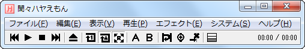

MP3プレイヤー フリーソフト
MP3プレイヤー フリーソフト



end_round();
?>
音楽を、もっと楽しく。
音楽―― 。それは、音を楽しむこと。
近年、音楽の大量消費化が進み、次々と新しい音楽が生み出されては、たちまち消えていってしまうような世の中になりました。
しかし、音楽の本質が変わることはありません。
音楽―― 。それは、音を楽しむこと。
どうやって？
その答えを用意しました。
「聞々ハヤえもん」です。
聞々ハヤえもんは、「音楽を、もっと楽しく！！」という目的のためだけに作られた世界でひとつだけのユニークなサウンドプレイヤーです。
さあ、聞々ハヤえもんをダウンロードしてみましょう。
あなたにとっての音楽が、今日から変わります。
聞々ハヤえもん開発者
山内 良太
山内 良太
今すぐ無料ダウンロード
News
更新履歴
2012/12/14(金) Version 2.61 β 19 開発版
再生位置のレジューム機能を追加しました。再生停止時に再生リストの１曲目に戻ってしまっていたのを修正しました。
2012/12/13(木) Version 2.61 β 18 開発版
タブ非表示時にエクスプローラの幅を調整できなかったのを修正しました。
2012/12/12(水) Version 2.61 β 17 開発版
ALACファイルの読み込みに対応しました。
2012/12/11(火) Version 2.61 β 16 開発版
再生リストの右クリックメニューから再生中のアーティストの曲をiTunes Storeで検索できるようにしました。
2012/12/10(月) Version 2.61 β 15 開発版
再生リストの右クリックメニューから再生中の曲の歌詞をインターネットで検索できるようにしました。


マニュアル動画公開中！！